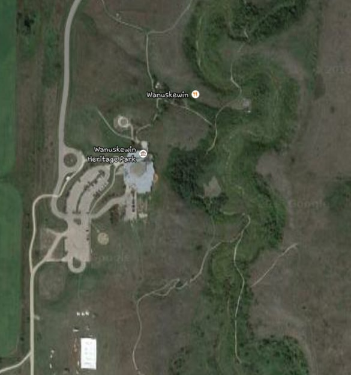

The project will make a mobile application that will provide an interactive map. Visitors will be able to download the application from the Wanuskewin Heritage Park’s website before they come to the park or download it real-time. This application can be available both for download to a visitor’s personal mobile phone, or available via tablets which visitors can borrow.
As the visitor proceeds through the visitor center and heritage park, the application will update their location via GPS. As visitors encounter different exhibits or sites in the park, pop-up tabs or buttons with which the user can interact will provide additional information about that particular site. The information will be delivered in formats such as pictures, text, audio, or videos. For example, as the visitor happens upon one of the heritage park’s archaeological dig sites, an interactive button will appear on the application on the map. Visitors can tap this button and view a short video about the site, examine pictures of artifacts found in the site, or read about the progress of the dig.
Wanuskewin Museum will maintain ownership and control of the application. The application will be housed, built, and maintained on servers at the museum, and an in-house developer team will be utilized to update the application, fix problems, approve visitor contributed content, and monitor usage and functionality. The developer team will work with the exhibition team to control the content and accessibility of the interactive map information. The application will be accessible for both Android and Apple users.